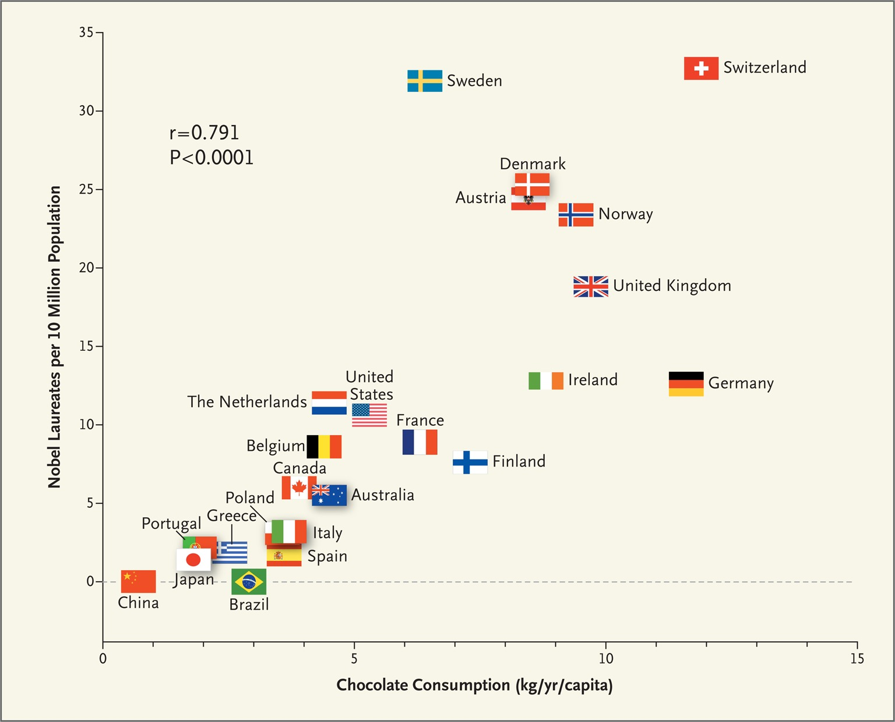
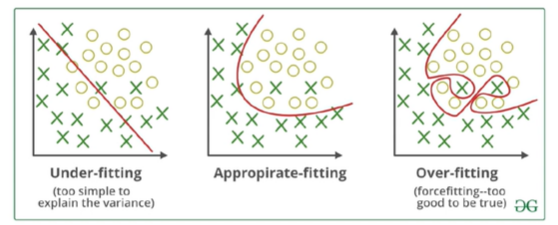
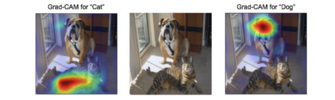
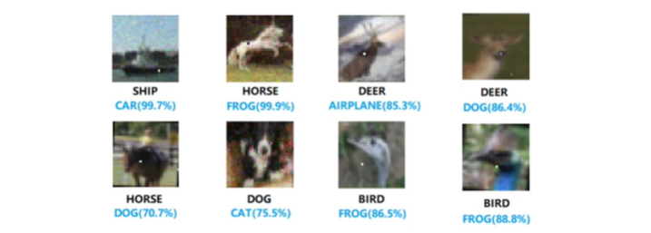
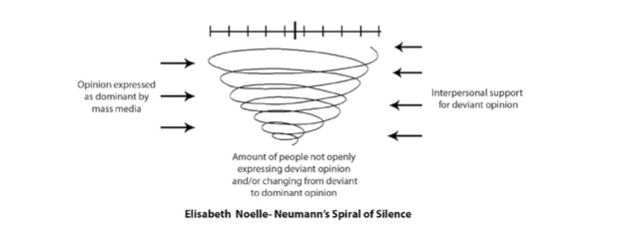

데이터를 잘 해석하고 있는가?
- 초콜렛을 많이 먹으면 노벨상을 탄다?
- 상관관계는 인과관계와 다르다.

데이터 전처리와 분석 방법은 적절한가?
- Error bar 추가하기
- 적합한 통계 테스트 찾기
- 아웃라이어 제거하기
- 데이터 표준화 하기
- EDA (exploratory data analysis) 충분한 시간을 보내기
학습에 쓰는 데이터가 충분한가

- 데이터 학습의 결과가 적절한 수준인지에 대한 인식이 있어야 함.
- 학습(training) 데이터는 테스트(testing) 데이터와 달라야 함.
Black box algorithm
- AI 모델의 결정에 설명력 더하기

- 흔히 AI 기반 학습 알고리즘은 설명 가능하지 않고 블랙박스 형태라는 단점이 존재
- High risk 결정에서는 설명력도 정확도 만큼이나 중요해짐.
- Saliency map, SHAP과 같이 post-hoc explainability를 제공하는 기술이 생김.
- 학습 결과가 바뀔 수 있는 위험성

- One pixel attack으 예시에서는 픽셀 하나만 바뀔 경우 알고리즘 학습 결과가 달라짐.
Handling the web data
- 의견의 대표성: Spiral of silence

- 오정보의 빠른 확산으로 인한 인포데믹 현상
- 인포데믹(infodemic) : 사실정보와 더불어 오정보의 양이 늘어 구분이 어려워지는 정보 과부화 현상.
결론
: 데이터 분석과 AI 학습에서 유의할점
- 데이터의 확보, 전처리, 분석, 해석의 전 과정이 중요
고품질의 데이터가 입력되었을 때 학습 결과도 유의미하며, 데이터가 가지는 오차 범위와 특이점, 대표성에 대한 충분한 이해를 가지고 접근해야 함.
- 알고리즘의 설명력, 편향, 신뢰의 문제에 주의
블랙박스 알고리즘이 실제 사회에서 사용되기 위해서는 많은 경우 설명력 보강이 필요하며, 노이즈와 데이터 가변성에도 대처 가능한 알고리즘을 개발하도록 노력.
AI가 다양한 사회 서비스에서 인간 결정을 돕거나 대체함에 따라 윤리적 의사결정이 확보되도록 점검.